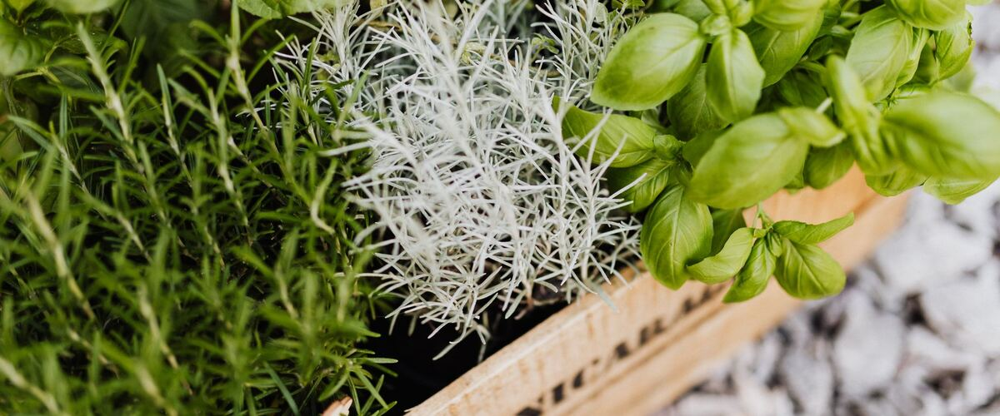

When to plant · 13 plants
Herbs
Annual and perennial herbs for the kitchen. Pick one for its dates in your town and how to grow it.
- BasilModerate
- CilantroEasy
- ParsleyEasy
- DillEasy
- ChivesEasy
- MintEasy
- RosemaryModerate
- ThymeEasy
- OreganoEasy
- LavenderEasy
- SageEasy
- TarragonModerate
- Lemon balmEasy


Planting order
When each one first goes in around Portland, starting indoors where that comes first. Colder towns run later.
Planting windows at a glance
Main planting window in five reference towns. Each plant's page has every town.
| Plant | Portland | Seattle and Tacoma | Bend and Redmond | Spokane | Boise and Meridian |
|---|---|---|---|---|---|
| Basil | May 25 – Jun 22 | May 25 – Jun 22 | Jun 16 – Jul 14 | May 30 – Jun 27 | May 10 – Jun 7 |
| Cilantro | Mar 1 – Apr 19 | Mar 1 – Apr 19 | Apr 28 – Jun 16 | Apr 1 – May 20 | Mar 20 – May 8 |
| Parsley | Mar 15 – May 3 | Mar 15 – May 3 | May 12 – Jun 30 | Apr 15 – Jun 3 | Apr 1 – May 20 |
| Dill | Mar 15 – May 17 | Mar 15 – May 17 | May 12 – Jul 14 | Apr 15 – Jun 17 | Apr 1 – Jun 3 |
| Chives | Mar 15 – May 10 | Mar 15 – May 10 | May 12 – Jul 7 | Apr 15 – Jun 10 | Apr 1 – May 27 |
| Mint | Mar 15 – May 10 | Mar 15 – May 10 | May 12 – Jul 7 | Apr 15 – Jun 10 | Apr 1 – May 27 |
| Rosemary | Mar 15 – May 3 | Mar 15 – May 3 | May 12 – Jun 30 | Apr 15 – Jun 3 | Apr 1 – May 20 |
| Thyme | Mar 15 – May 10 | Mar 15 – May 10 | May 12 – Jul 7 | Apr 15 – Jun 10 | Apr 1 – May 27 |
| Oregano | Mar 15 – May 10 | Mar 15 – May 10 | May 12 – Jul 7 | Apr 15 – Jun 10 | Apr 1 – May 27 |
| Lavender | Mar 15 – May 10 | Mar 15 – May 10 | May 12 – Jul 7 | Apr 15 – Jun 10 | Apr 1 – May 27 |
| Sage | Mar 15 – May 10 | Mar 15 – May 10 | May 12 – Jul 7 | Apr 15 – Jun 10 | Apr 1 – May 27 |
| Tarragon | Mar 15 – May 10 | Mar 15 – May 10 | May 12 – Jul 7 | Apr 15 – Jun 10 | Apr 1 – May 27 |
| Lemon balm | Mar 15 – May 10 | Mar 15 – May 10 | May 12 – Jul 7 | Apr 15 – Jun 10 | Apr 1 – May 27 |
Growing herbs in the Northwest
Herbs fall into two camps. Mediterranean perennials such as rosemary, thyme, oregano and lavender want full sun and sharp drainage, and in Northwest gardens it's winter wet, more than cold, that kills them. Plant them in a raised bed, a container or a gravelly, sloping spot, and go easy on fertilizer and water once they're established.
Leafy annuals are the other camp. Cilantro and dill grow well in cool spring weather but bolt quickly in summer heat, so sow a little every few weeks. Basil is the opposite: it needs warmth and suffers when nights are cool, so it's one of the last things to go out. Parsley sits in between and is happy from spring into winter in mild areas.
Mint spreads aggressively by underground runners, so keep it in a pot. Chives are the easiest place to start: a perennial that comes back every spring, takes partial shade and needs almost no care.
Common questions
Which herbs come back every year in the Northwest?
Chives, mint, oregano, thyme, sage, tarragon, lemon balm and lavender are perennial here. Rosemary survives most west-side winters in well-drained soil. Basil, cilantro and dill are annuals.
Why do my rosemary and thyme die over winter?
Usually wet, cold soil rather than cold air. Mediterranean herbs need sharp drainage, so grow them in raised beds, on a slope or in pots.
When can I plant basil outside?
Not until nights stay warm, usually late May or June. Basil is damaged by temperatures in the 40s, so it's one of the last herbs to go out.
Other plant types
- Salad greens
- Cabbage family
- Root vegetables
- Onion family
- Peas and beans
- Tomatoes and summer crops
- Squash, cucumbers and melons
- Berries
- Perennial vegetables
- Fruit and nut trees
- Native plants
- Flowers